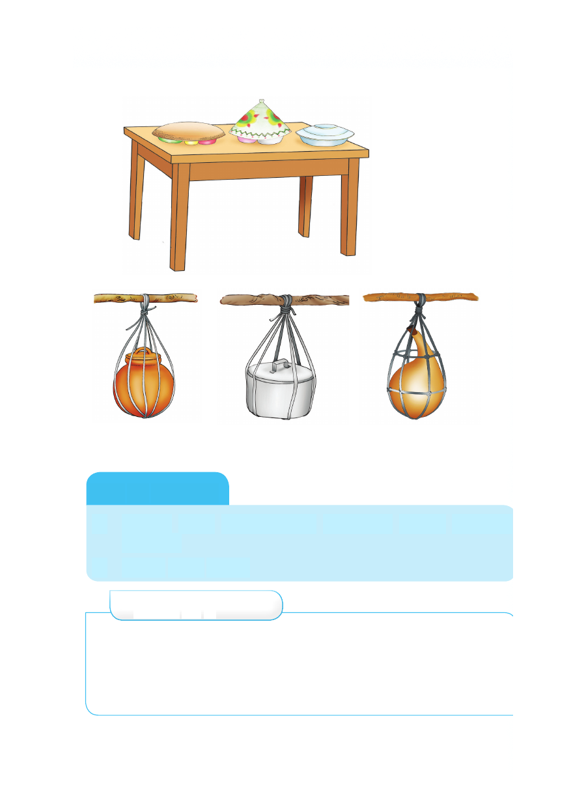

Kufunika chakula kwa ungo, kawa au sahani.
Kifaa maalumu cha kutunzia chakula kwa kuning'iniza
Kazi ya kufanya
1. Andika vifaa mnavyotumia nyumbani kwenu kutunzia
chakula.
2. Chora vifaa hivyo.
Zoezi la 2
1. Orodhesha mifano miwili ya magonjwa yanayotokana na
kula chakula kisichotunzwa vizuri.
2. Taja mifano mitatu ya wadudu wanaoleta vijidudu vya
maradhi kwenye chakula.
Kufunika chakula kwa ungo, kawa au sahani. Kifaa maalumu cha kutunzia chakula kwa kuning'iniza Kazi ya kufanya 1. Andika vifaa mnavyotumia nyumbani kwenu kutunzia chakula. 2. Chora vifaa hivyo. Zoezi la 2 1. Orodhesha mifano miwili ya magonjwa yanayotokana na kula chakula kisichotunzwa vizuri. 2. Taja mifano mitatu ya wadudu wanaoleta vijidudu vya maradhi kwenye chakula.